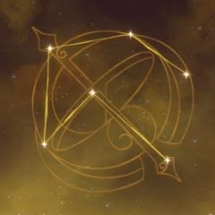

Ningguang
Ningguang (Chinese: 凝光 Níngguāng, "Condensed Light") is a playable Geo character in Genshin Impact. She is the Tianquan of the Liyue Qixing and owns the floating Jade Chamber in the skies of Liyue.
Appearance
Ningguang is a tall woman with fair skin, red eyes and an overall
elegant appearance. She has long straight hair, where half of it is
tied up into a wide bun resembling a bow, and the rest falls into
two divided parts. Her hair is white, reaches her knees and fades
into an ashy color. Her bun is accessorized with a black hairpin,
and she wears a red tassel decoration atop her head which lays
between her eyes.
Ningguang wears a white, high-necked sleeveless qipao dress with
side slits that reach up to the thigh. The side slit in her dress
reveal black shorts with diamond cut patterns. Her Geo Vision is
placed on her left midriff. Her gloves are decorated with copper
patterns and claw attachments on the thumb, ring, and pinky fingers
that act as fingernail guards. Ningguang also carries a smoking pipe
with her.
Her outfit, Gold Leaf and Pearly Jade, is described to have
intricate embroidery which is the hallmark of this graceful dress.
|
Rarity 4-star |
Weapon Catalyst |
Element Geo |
Personality
Ningguang is a professional businesswoman, having accumulated her
wealth through hard work and perseverance. As the Tianquan, she is
known for being highly meticulous in her work and holds a large amount
of influence within Liyue.
She is a calculating and ruthless businesswoman guided by the sole aim
of making Mora, which stems from her impoverished background.
She makes use of a large intelligence network and "pawns" to gain the
information she needs, and will only make use of people whose
weaknesses she knows. As a result, she is disliked by those with
significant influence, but nonetheless, many accept it as she adds to
the overall prosperity of both the Qixing and Liyue Harbor itself.
Despite her cold, business-driven exterior, she has Liyue's best
interests at heart. Under her decree in response to a case of water
contamination, those who intentionally endanger public health and
safety should be "shown no mercy whatsoever." When Osial was
reawakened and threatened Liyue Harbor, she put her conflict with the
adepti aside and ultimately sacrificed the Jade Chamber, her life's
work, to seal it away. She is also particularly fond of children, both
because they give her vital intelligence and because she enjoys seeing
them smile.
In-Game info
Model Type |
Tall Female |
Birthday |
August 26th |
Constellation |
Opus Aequilibrium |
Region |
Liyue |
Affiliation |
Liyue Qixing |
Special Dish |
Qiankun Mora Meat |
How to Obtain |
Event Wish, Paimon's Bargains |
Release Date |
September 28, 2020 |
Namecard
Ningguang: Phoenix
Obtain: Reward for reaching Friendship Level 10 with Ningguang
Constellation
Meaning:Balancing Creation